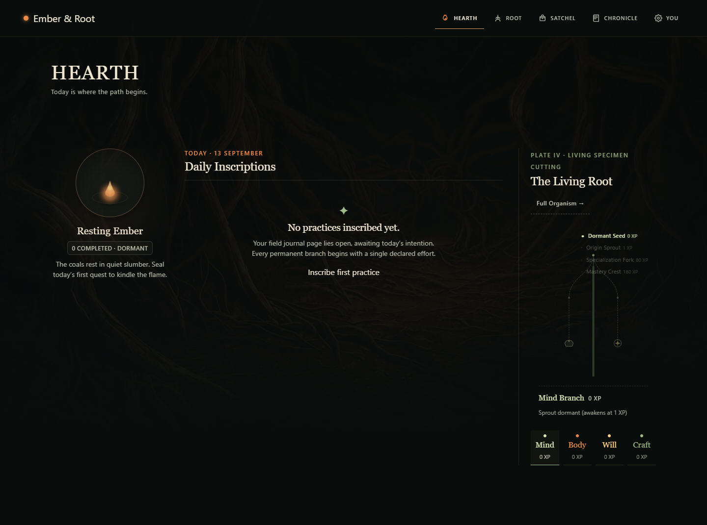
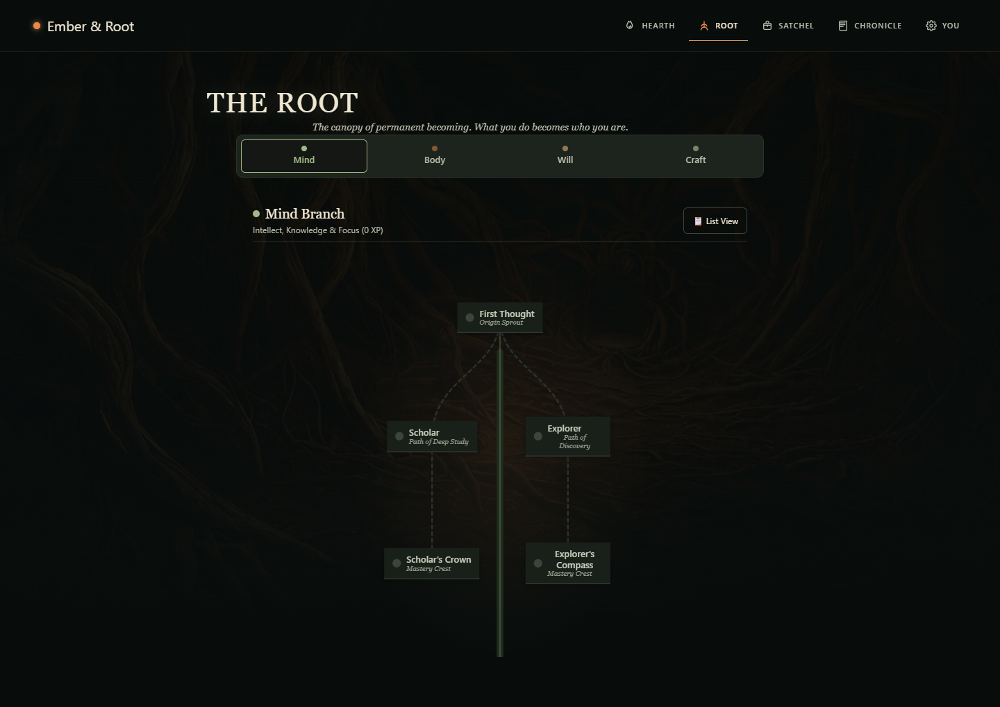
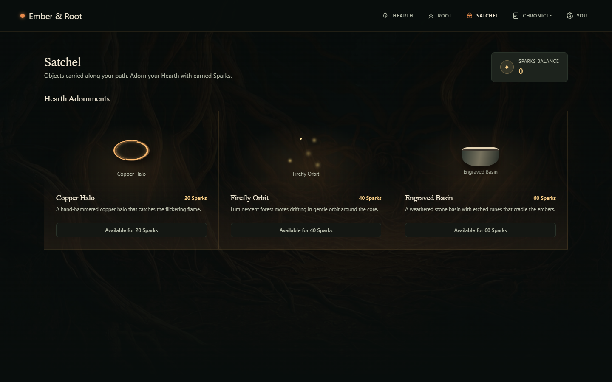
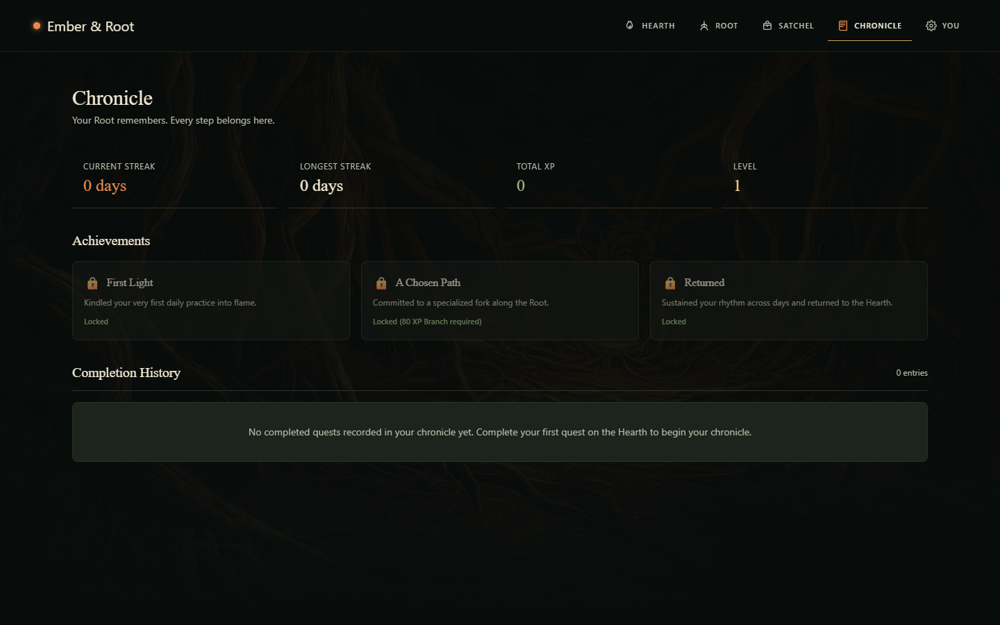

EMBER & ROOT · PLAYABLE PROLOGUE V2
The world becomes your game.
Forest → guidance → chamber → contact → inner Ember → storm shore → live entry. The final chest Ember carries the player through a copper bloom into the real signup or sign-in flow.
Play the local build ↗
Open the complete screen recording · Silent by design. Recording cadence is separate from measured runtime performance.
The complete sequence
Phone compositions
The authenticated world
These are real protected routes, captured after signing in with an isolated fresh review character. Their existing server actions, canonical Root anatomy, and progression rules are preserved. The review account was removed afterward.

Hearth · real authenticated route, fresh review character
Root · real authenticated route, fresh review character
Satchel · real authenticated route, fresh review character
Chronicle · real authenticated route, fresh review characterPerformance and verification
Local production Chrome, 1440 × 900 at DPR 1; mobile emulation 390 × 844 at DPR 2 with 4× CPU throttling. Values below measure requestAnimationFrame cadence, not GPU-presented frames or a physical phone.
| Stage | Desktop FPS | Mobile emulation FPS |
|---|
| forest | 60 | 60 |
| guided | 59.5 | 56.4 |
| chamber | 58.7 | 58.6 |
| discovery | 60 | 59.1 |
| surge | 55.9 | 56.7 |
| Shore 0 | 59.4 | 57.6 |
| Shore 1 | 59.2 | 59.7 |
| Shore 2 | 60 | 59.7 |
| Shore 3 | 60 | 59.4 |
| Shore 4 | 60 | 59.3 |
The shore stays approximately 59–60 FPS. Surge remains about 56 FPS with isolated longer frames, so a locked 60 FPS is not claimed. First-load JavaScript is 131 kB (about 1 kB above V1). Four WebP textures total 697,546 bytes; the two new shore assets add 333,252 bytes. No dependencies were added.
Keyboard and touch flow verified at 320, 375, 390, 768, and 1440 pixels. Reduced motion uses composed stops and opacity transitions. No cinematic progression requests. No observed runtime errors. The camera uses authored angle crossfades and layered matte paintings rather than continuous volumetric 3D rotation.